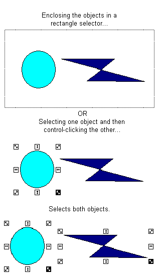

Performing basic functions with objects
The DeltaV Operate configuration environment provides many basic functions that you should be familiar with as you develop objects. Once you learn how to perform a basic function on one object, you can perform that function for all objects.
Using Shortcut Keys
By pressing a sequence of keys (referred to as shortcut keys), you can perform specific drawing operations that help you quickly accomplish a task. The following table shows you what shortcut keys are available and their function.
|
<Alt> and <arrow key> |
Move from one object handle to another around an object. |
|
<Ctrl> and <arrow key> |
Reshape an object by moving a point at an object handle. |
|
+ or - from numeric pad |
Rotate an object. |
|
<Ctrl> and mouse click |
Copy an object. |
|
<Shift> and any of the above |
Accelerate the operation. For example: <Shift> plus <Ctrl> and an arrow key quickly reshapes an object. |
Specific uses of shortcut keys are included throughout this chapter.
Selecting Objects
You can select an object by clicking it with the mouse. Objects can be selected in the picture itself or in the system tree. The selected object remains selected until you click another object. When you select an object, the object's handles appear, permitting you to change the object's size. For more information on object handles, refer to Basic Drawing Tools.
Selecting Multiple Objects
You can select multiple objects by enclosing two or more objects in a rectangle selector, or by selecting the first object and then control-clicking additional objects. The following figure shows both methods.

Moving Objects
You can move any object in a picture by clicking and dragging it to its new location. To move an object quickly, hold down the Shift key and click and drag the object.
Nudging
Sometimes you need to move an object more precisely to better control its placement in the picture. DeltaV Operate lets you move an object in small increments using the arrow keys. This concept is called nudging.
To nudge an object, select it and press an arrow key. The object moves one pixel in the direction indicated by the arrow key. By repeatedly pressing the arrow keys, you can slowly move the object to any desired location. To accelerate the movements, press Shift and an arrow key simultaneously.
Editing Objects
Naturally, you will occasionally make errors when you draw your pictures. Or, conversely, you may create something that you want to apply everywhere in your picture In either case, DeltaV Operate's editing functionality lets you quickly update how objects look in your picture.
A simple way to edit objects is to use the Edit Toolbar:
By default, the buttons in the above table appear in the Toolbox when you create or open a picture. If you have the Toolbox enabled, simply click the button on the Toolbox that corresponds top the editing function you want. These functions, as well as the other available editing functions, are detailed in the following sections.
Cutting Objects
When you cut an object, you remove the object from the picture and place it into the Clipboard. Once an object is in the Clipboard, it can be retrieved by pasting it back into the picture.
To cut an object, click the Cut button on the Edit toolbar or the Toolbox, if enabled.
Deleting Objects
Unlike cutting an object, deleting an object permanently removes it from the picture, unless you undo the operation. To delete an object, select the object and press Delete. Or, select Delete from the object's pop-up menu.
Copying and Pasting Objects
DeltaV Operate lets you copy objects in two ways: by placing a duplicate copy of the object into the clipboard for pasting into your picture, or by duplicating the object. To copy an object, select the object and click the Copy button on the Edit toolbar, or select Copy from the object's pop-up menu. Paste the object by clicking the Paste button on the Edit toolbar or the Toolbox, if enabled. You can also select Paste from the picture pop-up menu.
Duplicating an object is the easier method of copying and pasting, as it combines the copy-and-paste action into one step by avoiding copying the object to the clipboard. To duplicate an object, select the object you want to copy and select Duplicate from the object's pop-up menu. A second object with identical properties of the original appears slightly offset from the original. In the following figure, the oval to the lower right is a duplicate of the original.
You can copy any object using the copy or duplicate methods, including bitmaps and OCXs.
Renaming Objects
When you add an object to your picture, DeltaV Operate automatically names the object in the system tree and numbers it in the order it was created. For example, the second rectangle added to your picture would be titled Rect2 in the Pictures directory. To more easily recognize your objects, or to assign a specific name that represents a common property in your process, you can give it an alternate name.
To rename an object, right-click the object name in the system tree and select Property Window from the pop-up menu. Place the cursor in the second column of the Name row and enter a name. You can also select Animations from the pop-up menu and rename the object from the Animations dialog box.
Changing Object Names in Scripts
If you change the name of an object in a script, and then change the name back to its original, you may also change the edit event that is called from that script. DeltaV Operate attempts not to use an older name that is already used in a code or global module, but may not always be able to determine which names are valid.
Renaming Objects with Associated Script
By default, if you change the name of an object that has script associated with it, DeltaV Operate automatically renames the event name and the references to the object within the script for that object. Therefore, you do not have to explicitly do anything in your scripts to make these objects work.
However, if you are indirectly referencing any object names in a script from another object (for example, setting Rect1.HorizontalPositional from the click event on Oval1), this reference is not renamed.
To rename these references:
In DeltaV Operate, perform a Find and Replace to rename all objects. We do not recommend that you use the Include Scripts option in the Find and Replace feature from DeltaV Operate to perform this function. Doing so will replace objects that we are automatically renaming.
In the Visual Basic Editor, perform a Find and Replace to change any specific object references.
Renaming objects in the Property Window can greatly affect how your scripts run using VBA. For more information, refer to Writing Scripts.